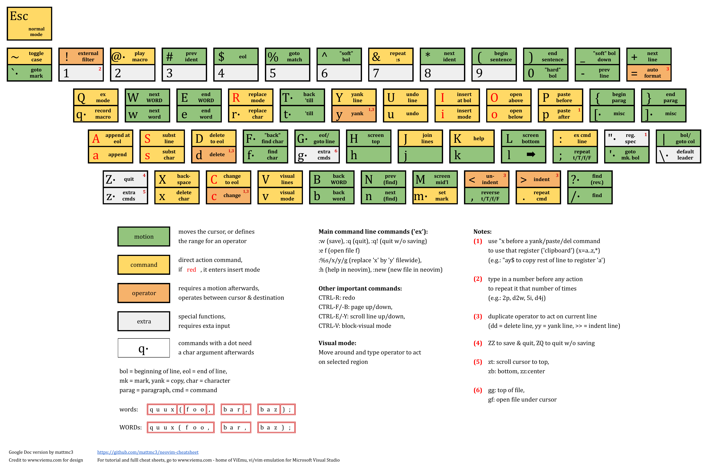

Vim
Vim Essentials
Vim Cheatsheet

Vim Shortcuts
Tip
Run vimtutor in a terminal to learn the first Vim commands.
Legend:
bol - begining of line
"soft" bol - first non-whitespace character of line
eol - end of line
"soft" eol - last non-whitespace character of line
buffer - content of opened in Vim file
register - Vim's clipboard
Modes
Normal Mode
- Default mode Vim starts in. Key presses don’t insert text into the document.
- To get back to the mode from other ones:
Esc or Ctrl+[ - back from any mode
v / vv - back from charwise / linewise visual mode
Insert Mode
- Typing inserts characters just like a regular text editor.
- Accessed from normal mode by pressing: i , I , a , A , o , O , c , C or s , S
-
Mode's specific commands:
Ctrl+h - delete the character before the cursor
Ctrl+w - delete word before the cursor
Ctrl+j - begin new line
Ctrl+t / Ctrl+d - indent(move right) / de-indent(move left) line one shiftwidth
Ctrl+p / Ctrl+n - insert(auto-complete) previous / next match before the cursor
Ctrl+r {char} - insert the contents of register {char}
Ctrl+o {command} - Temporarily enter normal mode to issue one normal-mode {command}
Replace Mode
- Allows replace existing text by directly typing over it.
- Accessed from normal mode by pressing: R
Visual Mode
- Used to make selections of text, similar to how clicking and dragging with a mouse behaves.
- Accessed from normal mode by pressing: v , V or Ctrl+q
-
Mode's specific commands:
u / U - change marked text to lowercase / uppercase
Command Mode
- Has a wide variety of commands and can do things that normal mode can’t do as easily.
- Accessed by pressing: / , ? or :
Global
- Ctrl+l - clear Vim's command line
- q: - show commands history list in a new horisontally-splitted window
:{command-pattern}Ctrl+d - show {command-pattern}'s available commands:map- mapping a key in command mode to a group of commands, e.g.:map de :1,$d^Mwill delete all lines when using the:decommand
Help
:h(or:help) - help- K - jumps to the help for the word under the cursor: neovim help, man page, etc...( qq - to get back to the editor)
Terminal Related
:pwd- print working directory:!{cmd}- execute a shell command named {cmd}:ter- load an inline terminal to new buffer in normal mode; to exit use:bd!orexitcommand in insert mode
Options
-
:set/:set {options}- show / define editor optionsSome of the commmon {options} are:
all- display all current vi options
[no]nu- display line numbers
[no]ruler(and optionallyrulerformat) - showing line number headers; if you don't want to see the ruler all the time but want to know where you are, use g Ctrl+g
[no]wrap- text wrapping
[no]linebreak- line breaking
[no]spell- spellchecking
syntax on/off- syntax highlighting
expandtab- space-tabbing
softtabstop=4- soft tab
shiftwidth=4- indent sizing -
:noremap x "_x- re-map x command to work with the "black hole" register, i.e. to allow deleting characters without copying
Repeating
- {num}{command} - repeat command {num} times
- & - repeat
:scommand - . - repeat previous change
Macros
- q{a-z} - start recording macro named {a-z}
- q - stop recording macro(after it started with the above command)
- @{a-z} - replay {a-z} macro
- @@ - replay the last macro played
Navigation
Argument list
A list of opened files given as arguments to the vim cmd.
:ar- print the argument list, with the current file in square brackets:[count]N[!]/:[count]n[!]- edit [count] previous / next file + discard any changes to the buffer if[!]is used
Buffers
A buffer is the in-memory text of a file.
- Ctrl+^ - switch between two last buffers
:ls- list all open buffers; focused buffer named with%a:bf(or:br) /:bl/:bp/:bn/:b#/:b{N}/:b {Name}- switch to first / last / previous / next / alternate(heretofore opened) / {N}'s(as shown by:ls) / {Name}(as shown by:ls) buffer:bad [+{lnum}] {file}- add {file} to the buffer list, without loading it, if it wasn't listed yet(and position cursor at {lnum} line):bd/:%bd/:bd#/:bd{N}/:bd {Name}- unload current / all / alternate(heretofore opened) / {N}'s(as shown by:ls) / {Name}(as shown by:ls) buffer and delete it from the buffer list- to force unload use
!afterbd; changes are lost in this case - in splitted layout that command will also close all windows currently showing the buffer
- to force unload use
:tab ba- edit all buffers as tabs:[range]bufdo[!] {command}- execute {command} in each buffer in the buffer list or only for buffers for which their buffer number is in the[range]; when the current file can't be abandoned and the[!]is not present, the command fails
Tabs
A tab page is a collection of windows.
:tabs- list all open tabs:tabeor:tabnew- open new tab:tabe {name} / {file}or:tabnew {name} / {file}- open new tab with name {name} / file {file}vim -p file1 file2- run Vim and open file1 and file2 in separate tabs- gt / gT or
:tabn/:tabp- move to the next / previous tab - {num}gt or
:tabm {num}- move to tab number {num} :tabm {num}- move current tab to the {num}th position (indexed from 0):tabc- close the current tab and all its windows:tabo- close all tabs except for the current one:tabdo {command}- run the {command} on all tabs (e.g.:tabdo q- closes all opened tabs)
Windows
A window is a viewport on a buffer.
- Ctrl+w n or
:sp n- create a new horizontal split and start editing an empty file in it - Ctrl+w s or
:sp/ Ctrl+w v or:vert sp- create a horizontal / vertical split - {num}Ctrl+w ^ - create a horizontal split and edit the alternate / {num} buffer
- Ctrl+w c or
:clo- close focused split window, i.e. doesn't close not-splitted window - Ctrl+w q - quit a window
-
{num}Ctrl+w o or
:{num}on[!]- close(force close if!is used) all but the current / {num} window -
{win_num}Ctrl+w x - exchange current window with next / {win_num} window
- Ctrl+w r - rotate windows downwards/rightwards; this only works within the row or column of windows that the current window is in
- Ctrl+w R - rotate windows upwards/leftwards; this only works within the row or column of windows that the current window is in
-
Ctrl+w T - move the current split window into its own tab
-
Ctrl+w = - make all windows equal height & width
- {num}Ctrl+w - / {num}Ctrl+w + or
:{win_num}res [+-]{num}- decrease / increase current(or {win_num}) window height by 1 / {num} - {num}Ctrl+w < / {num}Ctrl+w > or
:vert {win_num}res [+-]{num}- decrease / increase current(or {win_num}) window width by 1 / {num} -
Ctrl+w _ / Ctrl+w | - set current window height / width to highest / widest possible
-
{num}Ctrl+w w - move cursor to next / {num} window
- Ctrl+w h / Ctrl+w l - move cursor to the left /right window (vertical split)
- Ctrl+w j / Ctrl+w k - move cursor to the window below / above (horizontal split)
- Ctrl+w t / Ctrl+w b - move cursor to top-left / bottom-right window
- Ctrl+w p - move cursor to previous (last accessed) window
-
Ctrl+w P - move cursor to preview window; when there is no preview window this is an error
-
Ctrl+w H / Ctrl+w L - make current window full height at far left(leftmost) / right(rightmost) vertical window
-
Ctrl+w J / Ctrl+w K - make current window full width at the very bottom(bottommost) / top(topmost) horizontal window
-
:[range]windo {commad}- execute {commad} in each /[range]window(s)
Screen
- Ctrl+f / b ( or Shift+Up / Down or Page Up / Page Down ) - move pages up / down
- Ctrl+u / d - move up / down 1/2 a screen
- Ctrl+e / y - scroll line up / down
- zt , zz , zb - scroll cursor to top, center, bottom
Folding
- {num}zF - create a fold for {num} lines
:{range}fo- create a fold for the lines in {range}- zo / zO - open fold(s) by one / all level(s) under the cursor
- zc / zC - close fold(s) by one / all level(s) under the cursor
:{range}foldo[!]/:{range}foldc[!]- open / close folds in {range} by one or all(when[!]is used) level(s)- za / zA - toggle one / all fold(s) under the cursor
- zv - view cursor line: open just enough folds to make the line in which the cursor is located not folded
- zr / zR - reduce(open) all folds by one / all level(s)
- zm / zM - fold more(close) all folds by one / all level(s)
- zi - toggle folding functionality(inverts foldenable setting)
Following commands only work when foldmethod set to "manual" or "marker": - zd / zD - delete one fold(nested folds are moved one level up) / all folds at the cursor
- zE - eliminate all folds in the window
Marks and positions
:marks- list of marks-
m{a/A-z/Z} - set a mark {a/A-z/Z}; {a-z} - per buffer marks, {A-Z} - global marks
-
:ju- list of jumpsNote
Jump - a command that normally moves the cursor several lines away.
If you make the cursor jump the position of the cursor before the jump is remembered.
Junp commands are: ` , ' , g, G , L , M , H , ( , ) , { , } , [[ , ]] , % ,/,?, n , N ,:s,:tagand the commands that start editing a new file. -
Ctrl+o / Ctrl+i (or Tab ) - move cursor to older(backwards) / newer(forward) position in jump list
-
:changes- list of changes - g; / g, - move cursor to older(backwards) / newer(forward) position in change list
Motion
Note
Motion - move the cursor, or define the range for an operator.
-
`{mark} / '{mark} - move the cursor to {mark} / "soft" bol of {mark}
Special marks:
` / ' - position / "soft" bol of position before the last jump
. - position of the last change in this file
" - position when last editing this file
0 - position where Vim was previously exited -
( / ) - move the cursor backwards to the beginning of the current(if cursor is not at the first letter of the sentence) or next sentence / forward to the beginning of the next sentence
- { / } - move the cursor to the previous / next empty line, i.e. to previous / next paragraph(or function/block, when editing code)
- [z / ]z - move cursor to the start / end of the current open fold
- zj / zk - move cursor downwards / upwards to the start / end of the next / previous fold
- gd / gD - move cursor to local / global variable declaration
- H , M , L - move the cursor to the top, middle, bottom line on screen
- gg (or [[ ) / G (or ]] ) - move the cursor first / last line of the file
-
:{num} or {num}gg or {num}G - move the cursor to line {num} of the file
-
h , j , k , l (or Left , Down , Up , Right ) - move the cursor left, down, up, right
- gj / gk - move the cursor down / up in multi-line text
- w ( or Shift+Right ) / W ( or Ctrl+Right ) - move cursor to begining of next word / whitespace-separated segment of text
- b ( or Shift+Left ) / B ( or Ctrl+Left ) - move cursor to previous begining of word / whitespace-separated segment of text
- e / E - move the cursor to end of word / whitespace-separated segment of text
-
ge / gE - move the cursor to end of previous word / whitespace-separated segment of text
-
% - move the cursor to matching parenthesis, bracket or brace
- f{char} / F{char} - move the cursor to the next / previous instance of {char}
- t{char} / T{char} - move the cursor till the next / previous instance of {char}
- ; - repeat f , F , t , T commands
-
, - reverse f , F , t , T commands
-
0 or | - bol of current line
- ^ or _ - "soft" bol of current line
- $ - eol of current line
- g_ - "soft" eol of current line
- + or Enter - "soft" bol of next line
- - - "soft" bol of previous line
Search in all windows for current screen:
-
/{pattern}/?{pattern}- forward / reverse search for {pattern}Note
Regular expressions:
Both Vim’s find(
/,?) and replace functions accept regular expressions.
Characters assumed by Vim as part of regular expression(must be escaped with\to be searched for literally):(,),*,.,^,$
Regular expression patterns that interpreted literally(must be escaped with\to be used as a part of a regular expression):+{\pattern} - "very magic" pattern:
Non-alphanumeric characters are interpreted as special regex symbols (no escaping needed), e.g.
/\a- search for alphabetic character: [A-Za-z]. For more info search help::h magicIgnoring case:
\cin searching and replacing commands - can be placed anywhere in the sequence being searched for and affects the whole sequence- cgn - change next match
/{pattern}/m$- move first match line to the last line of the document(doesn't seem to work)
-
/\<{word}\>- find the next occurrence of the word {word}, where {word} is bounded by word - * / # - search forward / backwards for the next instance of the identifier(word) under the cursor
- g* / g# - search forward / backwards for the next instance(including nested in other word) of the identifier(word) under the cursor
- n / N - repeats the last search in the same / opposite direction specified by the last use of * , # , / , ? (the last two are command mode motion commands) boundaries (ex. space, dash)
Search in multiple file(wether in current screen or not):
:vim /{pattern}/ {file 1} {file 2} ...- search for {pattern} in files {file 1}, {file 2} etc.:cp/:cn- move cursor to the previous / next match:cope- open a window containing the list of matches:ccl- close the quickfix window
2 last commands are not motions!
Selecting
- v - visual : marks starting selection point, then move the cursor to the desired end selection point
- V - linewise-visual : always select full lines
- Ctrl+q - block-visual : select any rectangular region
- upon selecting one can use various operators
:noh- un-highlight search matches
Editing
- i - insert at cursor
- a - append after cursor
- I - insert at the beginning of the line
- A - append at the end of the line
- gi - insert text in the same position as where insert mode was stopped last time in the current buffer
- o - insert a line below the current line
- O - insert a line above the current line
:ab- define a text abbreviation in insert node, e.g.:ab VIM Vi Improvedwill auto-complete "VIM" in insert mode for the phrase "Vi Improved" them to the clipboard
{abbreviation}Ctrlv - to disable auto-completion and type the {abbreviation} as is:[range] norm A{text}- add {text} on each eol within the [range];Ais just an example, other commands could be used instead:[range]folddoc {cmd}/:[range]foldd {cmd}- execute {cmd} on all lines(or lines in[range]) that are / are not in a closed fold. Example::foldd s/end/loop_end/ge(note the use of theeflag to avoid getting an error message where "end" doesn't match)-
:r {file}- insert {file} content at the current cursor position -
~ - toggle case of character beneath the cursor
- r - replace a character at the cursor position
- R - replace characters starting at the cursor position using overstrike cursor, which types over existing characters
- J - joins the current line with the next one, or all the lines in the current visual selection with one space in between
-
gJ - joins the current line with the next one, or all the lines in the current visual selection without space in between
-
p - put : to paste after (if charwise, to the right; if linewise, below)
- P (or p[ ) - put : to paste before (if charwise, to the left; if linewise, above)
- gp , gP - same as p , P + leave cursor after the new text(if charwise) or at the bigining of next line(if linewise)
- Shift+Ins - paste from system PRIMARY clipboard
-
Ctrl+Shift+v - paste from system CLIPBOARD clipboard
-
u - undo the previous operation
- U - restore (undo) last changed line
- Ctrl+r - redo last undo change
Diff mode
Diff - showing differences between 2 to 8 versions of the same file.
-
nvim -d file1 file2 [file3 [file4]]- cmd command to start editing in diff mode using vertical split
The second and following arguments may also be a directory name. Vim will then append the file name of the first argument to the directory name to find. the file.
Use-oargument for horizontal split. -
:diffs {file}/:vert diffs {file}- start diff mode for the current and the newly opened window for {file} in horizontal / vertical split layoutTip
If you always prefer a vertical split include "vertical" in diffopt.
-
:difft- make current window part of diff windows :diffo[!]- switch off diff mode for the current window and, when!is used, in all windows in the current tab page where diff is set(hidden buffers are also removed from the list of diff'ed buffers in this case):dif[!]- update the diff highlighting and folds; if the!is included Vim will check if the file was changed externally and needs to be reloaded- [c / ]c - move cursor to start of previous / next change
- {bufspec(count)}do or
:[range]diffg [bufspec]- obtain(get) difference(from other buffer) - {bufspec(count)}dp or
:[range]diffpu [bufspec]- put difference(to other buffer) -
Note
In 2 comands above:
bufspec argument specifies the buffer to be used and can be a buffer number, a pattern for a buffer name or a part of a buffer name.
If bufspec is omitted the other buffer which is in diff mode is used. But for the second command there should be only one such buffer(where modifiable is set), otherwise it fails.
Registers
Tip
Registers are being stored in ~/.viminfo, and will be loaded again on next restart of Vim.
- "{char} - select from register the {char} register before a yank/delete/put commands, e.g. "aY - copy rest of line to register a
- "{A-Z} before yank/delete - append-copy to register {a-z}
- following {chars} are special registers:
0- last yank
"- unnamed register, last delete or yank
%- current file name
#- alternate file name
*- X11 PRIMARY(data copied upon highlighting with mouse) clipboard contents
+- X11 CLIPBOARD(traditional windows-like) clipboard contents
/- last search pattern
:- last command-line
.- last inserted text
-- last small (less than a line) delete
=- expression register
_- black hole register
Replacing
-
:[range]s/{old}/{new}/[flags]- replace {old} with {new} in range according to flagsRanges:
%- the entire file
'<,'>- the current selection; the default range while in visual mode
25- line 25
25,50- lines 25-50
$- last line; can be combined with other lines as in50,$
.(or just empty sign) - current line; can be combined with other lines as in.,50(or,50)
,+2or+2,- the current lines and the two lines therebelow
-2,or,-2- the current line and the two lines thereaboveFlags:
g- replace all occurrences on the specified line(or lines selected in visual mode); without this flag just the first occurrence is changed per line
i- ignore case
c- confirm each substitution
Operators
Note
Operator - operate on the specified range depending on current Vim mode:
- normal mode - range is specified by a series of modifiers
- visual mode - range is the highlighted text
- y - yank : copy
- d - delete : cut
- c - change : cut
- = - format code
- > / < - un-indent / indent
- ![modifier] {filter} - filter text lines through the external program {filter}
Useful filter programs:
sort- e.g.!4jsortwill sort the next four lines
tr- e.g.!}tr "[:lower:]" "[:upper:]"will translate the current paragraph to uppercase
uniq- e.g.!5juniqto ensure the next five lines to be unique - g~ - toggle case
- gq / gw - format the lines / and put the cursor back at the same position in the text; see:
:h gq,:h fo(format options),:h fp(format program),:h fo-table(an explanation of the possible options)
tip for useful command: gwip - reflow paragraph - zf - manually define a fold(not a editing command, but a view changer)
Operator's modifiers
Operator doubling
double an operator to make it operate on a whole line:
- yy - copy current line(no matter where the cursor located in it), including invisible newline sign at the end
- dd - cut current line(no matter where the cursor located in it), including invisible newline sign at the end
- cc - cut current line(no matter where the cursor located in it), including invisible newline sign at the end
- == - format line
- >> / << - increase / decrease current line indentation(no matter where the cursor located in it)
- !! {filter} - filter current line through the external program {filter}
- gqq / gww - format current line / and put the cursor back at the same position in the text
useful shorthands:
- S ( same as cc ) - substitute line
Motions
use operators and motions together by following any of these patterns:
- {operator}{num}{motion}
- {num}{operator}{motion}
useful shorthands:
Tip
When you capitalize a command it performs a stronger (or alternate) version of the original command.
-
Y ( same as y$ ) - copy from cursor position to end of line
-
D ( same as d$ ) - cut from cursor position to end of line
- x ( same as dl ) - cut character after the cursor
-
X ( same as dh ) - cut character before the cursor
-
s ( same as cl ) - substitute character : cut character after the cursor and enter insert mode
- C ( same as c$ ) - cut from cursor position to end of line and enter insert mode
Text objects
Text objects are special motions that describe structured pieces of text(the entities of a document domain model), e.g. words, sentences, quoted text, paragraphs, blocks, (HTML) tags, etc.
Specify a text object within a command by following this pattern: {operator}{a|i}{text-object}
- a (think a or all) - a text object plus surrounding whitespace
- i (think inner) - inner object without whitespace
-
text-object - one of the built-in text objects:
w- word
s- sentence
',",`- quotes
p- paragraph
b(or(,)) - block surrounded by ( )
B(or{,}) - block surrounded by { }
<,>- block surrounded by < >
[,]- block surrounded by [ ]
t- tag
File Manipulation
Creating, opening
:new- new file:e {file}- edit {file} in a new buffer:e scp://remoteuser@server.tld//absolute/path/to/documentor:e scp://remoteuser@server.tld/remoteuser/home/directory/relative/path/to/document- edit remote file via scp:sp {file}- open a file in a new buffer and horizontally split window:vs {file}- open a file in a new buffer and vertically split window- gf / gF - open file under cursor / and jump to the line number following the file name
- Ctrl+w f / Ctrl+w F - split current window in two + open file under cursor / and jump to the line number following the file name
- Ctrl+w gf / Ctrl+w gF - open a new tab page + open file under cursor / and jump to the line number following the file name
Exiting, saving
:q/:q!or ZQ - close / force-close a file without saving:w- save the current file:w !sudo tee %- write out the current file using sudo:wq(or:x) /:wq!(or:x!) or ZZ - save and close the current file / force save and close the current file; exits Vim if no open files remain:w {newfile}(:{x},{y}w {newfile}) - write the whole ( from line {x} to line {y} ) current buffer into {newfile}, but continue editing the original file;:w! {file}(:{x},{y}w! {file}) to overwrite content of {file} that already exists:w >> {file}(:{x},{y}w >> {file}) - append the whole ( from line {x} to line {y} ) current buffer to {file}:sav {newname}- save a copy of the current file as {newname} and continue editing the file {newname}
Vim Tips & Tricks
Useful configs
Execute Vim's commands in a file from the command line
Use -c flag. You can separate multiple commands with a pipe |. Example:
vi -c "%s/false/true/g|:wq" file.txt
Vim Plugins
Floaterm
Fzf
Ctrl+t , Ctrl+x , Ctrl+v - open file in a new tab, split, vertical split
Commands -
NERD Commenter
Replace With Register
[count] ["x] gr - replace {motion} text with the contents of register x.
[count] ["x] grr - replace [count] lines with the contents of register x.
{Visual} ["x] gr - replace the selection with the contents of register x.
Targets
Provides additional text objects.
Vim-argwrap
,r - wrap/unwrap arguments inside of the parenthesis, brackets or curly braces.
Configuration -
Vim-indent-object
Vim-textobj-user
Create your own text objects.
Vim Unimpaired
Vim Surround
Vim Gitgutter
[c / ]c - jump to previous / next hunk (change)
Leaderhs / Leaderhu - stage / unstage the hunk
Commands -
Vim Fugitive
Vimagit
LeaderM - open Magit buffer
Mappings -
ALE and coc.nvim
...to be edited after installation and trying